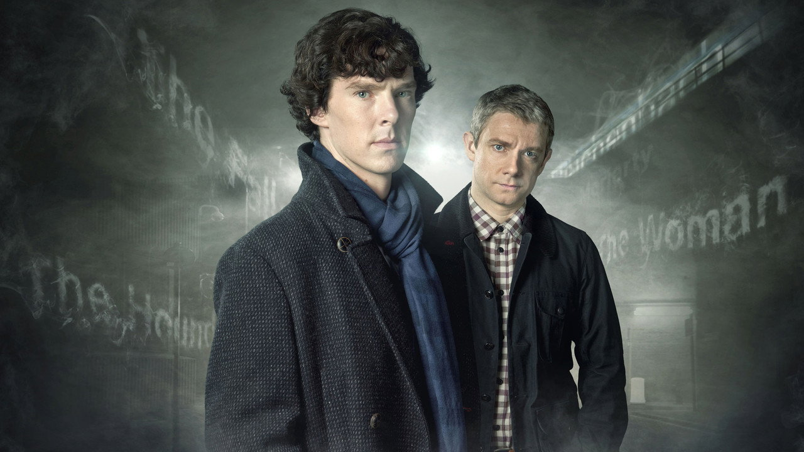
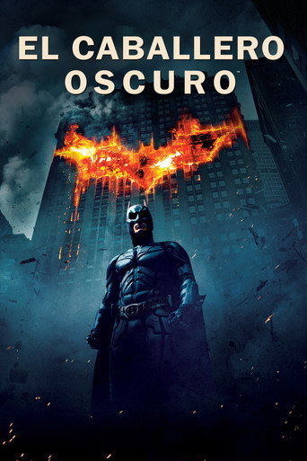

Sherlock
2010 · 4 temporadas · 90 min

te quedan 2 episodios
de Sherlock
Series y películas al día, en español. Y tus datos, siempre tuyos.
2010 · 4 temporadas · 90 min
Caja de frase, KulturaDisplay 800, tracking −5 %. La K se corta con el chaflán de las portadas: el logotipo es la forma.
Visto · 11,6:1
Error · 9,2:1
Contrastes sobre sala / superficie / elevada. El acento solo marca la cifra de lo que falta y la acción; nunca el foco.
Tus series, al día.
AÑO ÉPICO
Tus datos, siempre tuyos.
Marcas el episodio al terminarlo y sabes por dónde vas, en el móvil o en el escritorio.
2 · T3 E2 · 90 min

 Proyecto Salvación
Proyecto Salvación